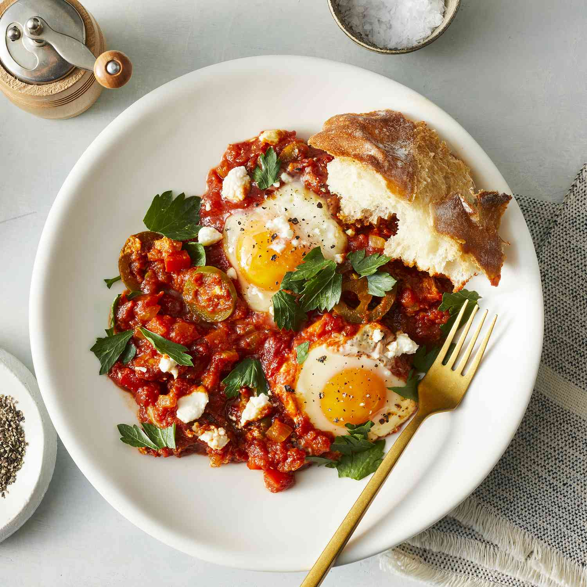

Shakshuka

Description
A Maghrebi(North African) dish featuring poached eggs in spicy tomato sauce seasoned with peppers, onion,
garlic and various spices. The word shakshuka means "mixed" in Maghrebi Arabic dialect and is a popular
breakfast menu.
Ingredients
- 2 tablespoons olive oil
- 1 large onion diced
- 1/2 cup sliced fresh mushrooms
- 1 teaspoon salt, plus more to taste
- 1 cup diced red bell pepper
- 1 jalapeno pepper, seeded and sliced
- 1 teaspoon cumin
- 1/2 teaspoon paprika
- 1/2 teaspoon ground turmeric
- 1/2 teaspoon freshly gournd black pepper ,plus more to taste
- 1/2 teaspoon cayenne pepper
- 1 (28ounce) can crushed San Marzano tomatoes
- 1/2 cup water, or more as needed
- 6 large eggs
- 2 tablespoons crumbled feta cheese
- 2 tablespoons chopped fresh parsley
Steps
- Heat olive oil in skillet pan over medium-high heat. Add onion and mushrooms and lightly
season with salt. Cook for around 10 minutes.
- Add bell pepper and jalapeno pepper and cook for around 5 minutes until peppers begin to soften.
- Season the peppers with cumin, paprika, turmeric, black pepper, and cayenne pepper. Cook and stir
for about 1 minutes.
- Stir in tomatoes and water. Reduce heat to medium and gently simmer uncovered for 15 to 20 minutes,
stirring from time to time until the vegetables are softened. Add more water if sauce becomes too thick.
- Use a large spoon to make a depression for each egg. Crack eggs and lightly season with salt and pepper.
Cover and cook until eggs are of desired doneness.
- Top with feta cheese and parsley to serve.